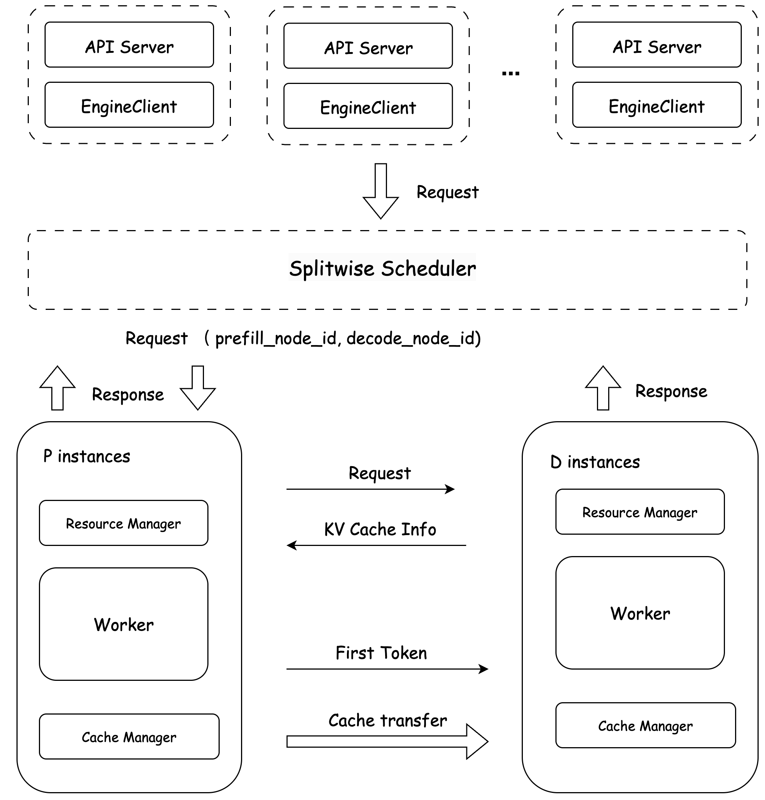

Disaggregated Deployment
Large model inference consists of two phases: Prefill and Decode, which are compute-intensive and memory access-intensive respectively. Deploying Prefill and Decode separately in certain scenarios can improve hardware utilization, effectively increase throughput, and reduce overall sentence latency.
- Prefill phase: Processes all input Tokens (such as user prompts), completes the model's forward propagation, and generates the first token.
- Decode phase: Starting from the first generated token, it generates one token at a time autoregressively until reaching the stop token. For N output tokens, the Decode phase requires (N-1) forward propagations that must be executed serially. During generation, the number of tokens to attend to increases, and computational requirements gradually grow.
The core of disaggregated deployment is to deploy Prefill and Decode on different computing resources to improve their respective utilization. To achieve disaggregated deployment, communication between Prefill and Decode must be considered. During actual inference, Prefill needs to transmit the computed KV Cache to the Decode instance, which then reads the KV Cache for continuation.
KV Cache Transmission Methods
We provide two transmission methods for KV Cache, targeting intra-machine and inter-machine scenarios respectively.
Intra-machine Transmission
Uses cudaMemcpyPeer for KV Cache transmission between two GPUs within a single machine, offering low latency and high throughput.
Inter-machine Transmission
For transmission between multiple machines, uses high-speed RDMA network for KV Cache transmission. We provide the rdma_comm high-speed transmission network library for cross-machine KV Cache transmission.
PD Disaggregated Scheduling

Building upon the global scheduler, FastDeploy supports the PD disaggregated scheduling strategy, specifically designed for large language model inference scenarios, decoupling the two phases of the inference process: * Prefill phase: Builds KV cache, compute-intensive, high memory usage but low latency. * Decode phase: Performs autoregressive decoding, serial process, time-consuming but with low memory usage.In multi-instance scenarios, each incoming request needs to be assigned to different Prefill and Decode instances based on different strategies. Through role separation (Prefill nodes handle request reception and processing, Decode nodes complete subsequent generation), resource allocation can be more finely controlled to improve throughput and GPU utilization.
Usage Instructions
Single-machine Disaggregated Deployment
Online Inference Service
Use the following commands for service deployment:
Prefill Instance
export FD_LOG_DIR="log_prefill"
export CUDA_VISIBLE_DEVICES=0,1,2,3
python -m fastdeploy.entrypoints.openai.api_server \
--model ERNIE-4.5-300B-A47B-BF16 \
--port 8180 --metrics-port 8181 \
--engine-worker-queue-port 8182 \
--cache-queue-port 8183 \
--tensor-parallel-size 4 \
--quantization wint4 \
--splitwise-role "prefill"
Decode Instance
export FD_LOG_DIR="log_decode"
export CUDA_VISIBLE_DEVICES=4,5,6,7
# Note: innode-prefill-ports should specify the engine-worker-queue-port of the Prefill service
python -m fastdeploy.entrypoints.openai.api_server \
--model ERNIE-4.5-300B-A47B-BF16 \
--port 8184 --metrics-port 8185 \
--engine-worker-queue-port 8186 \
--cache-queue-port 8187 \
--tensor-parallel-size 4 \
--quantization wint4 \
--innode-prefill-ports 8182 \
--splitwise-role "decode"
Note: When requesting single-machine PD disaggregated service, users should request the Decode service's port.
Offline Inference Service
Refer to the example code offline_disaggregated_demo.py in the fastdeploy/demo directory for offline inference service deployment.
Multi-machine Disaggregated Deployment
Prerequisite: Redis
⚠️ NOTE
Redis requirement: version 6.2.0 or higher
Versions below this may not support the required commands.
- Installation via
conda
# Install
conda install redis
# Start
nohup redis-server > redis.log 2>&1 &
- Installation via
apt
# Install
sudo apt install redis-server -y
# Start
sudo systemctl start redis-server
- Installation via
yum
# Install
sudo yum install redis -y
# Start
sudo systemctl start redis
Online Inference Service
For multi-machine deployment, confirm that the NIC supports RDMA and that all nodes in the cluster have network connectivity.
Note:
* KVCACHE_RDMA_NICS specifies RDMA network cards for the current machine, multiple cards should be separated by commas.
* The repository provides an automatic RDMA network card detection script bash scripts/get_rdma_nics.sh <device>, where cpu or gpu.
Prefill Instance
export FD_LOG_DIR="log_prefill"
export CUDA_VISIBLE_DEVICES=0,1,2,3
echo "set RDMA NICS"
export $(bash scripts/get_rdma_nics.sh gpu)
echo "KVCACHE_RDMA_NICS ${KVCACHE_RDMA_NICS}"
python -m fastdeploy.entrypoints.openai.api_server \
--model ERNIE-4.5-300B-A47B-BF16 \
--port 8180 --metrics-port 8181 \
--engine-worker-queue-port 8182 \
--cache-queue-port 8183 \
--tensor-parallel-size 4 \
--quantization wint4 \
--cache-transfer-protocol "rdma,ipc" \
--rdma-comm-ports "7671,7672,7673,7674" \
--pd-comm-port "2334" \
--splitwise-role "prefill" \
--scheduler-name "splitwise" \
--scheduler-host "127.0.0.1" \
--scheduler-port 6379 \
--scheduler-ttl 9000
Decode Instance
export FD_LOG_DIR="log_decode"
export CUDA_VISIBLE_DEVICES=4,5,6,7
echo "set RDMA NICS"
export $(bash scripts/get_rdma_nics.sh gpu)
echo "KVCACHE_RDMA_NICS ${KVCACHE_RDMA_NICS}"
python -m fastdeploy.entrypoints.openai.api_server \
--model ERNIE-4.5-300B-A47B-BF16 \
--port 8184 --metrics-port 8185 \
--engine-worker-queue-port 8186 \
--cache-queue-port 8187 \
--tensor-parallel-size 4 \
--quantization wint4 \
--scheduler-name "splitwise" \
--cache-transfer-protocol "rdma,ipc" \
--rdma-comm-ports "7671,7672,7673,7674" \
--pd-comm-port "2334" \
--scheduler-host "127.0.0.1" \
--scheduler-port 6379 \
--scheduler-ttl 9000
--splitwise-role "decode"
Parameter Description
- --splitwise-role: Specifies whether the current service is prefill or decode
- --cache-queue-port: Specifies the cache service port for communication between prefill and decode services
Single-machine Parameters
- --inner-prefill-ports: Only required for Decode instance, specifies the port list of prefill instances to connect to
Multi-machine Parameters
- --cache-transfer-protocol: Specifies KV Cache transmission protocol, supports ipc and rdma, default is ipc
- --scheduler-name: For PD disaggregation, set to "splitwise"
- --scheduler-host: Redis address to connect to
- --scheduler-port: Redis port to connect to
- --scheduler-ttl: Specifies Redis TTL time in seconds
- --pd-comm-port: Specifies PD communication port
- --rdma-comm-ports: Specifies RDMA communication ports, multiple ports separated by commas, quantity should match GPU count